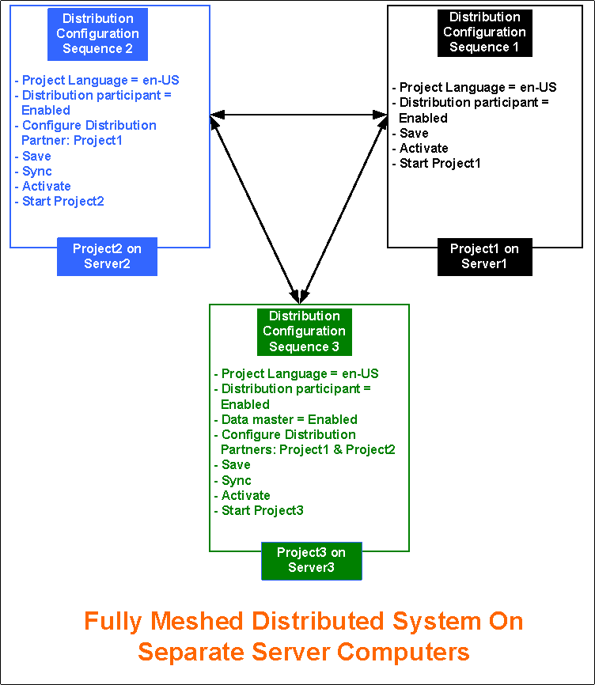

Fully Meshed Distributed Systems On Separate Servers in Automatic Mode
Scenario
You want to set up a Fully Meshed distributed system on separate servers. To do this, you must configure the projects on separate servers in distribution.
The following procedure describes configuring distribution using Automatic mode.

NOTE:
On separate servers, you can set only those projects in distribution which have identical security configuration (server communication set to secured or unsecured). It is recommended that you set the projects in distribution with secured configurations.
Prerequisites
- Using the distribution media, you have installed the setup type as a server on three separate computers. The software version of Desigo CC, as well as the extensions installed on all the distribution Partner Systems, are the same.
- To work with Windows App client, you have installed Internet Information Services (IIS) on all or at least one server.
- To set up three projects on a separate server in distribution, ensure the following in SMC for each project participating in distribution:
- You have two or more projects with project status as
Stopped. For example, if you have three stopped projects, Project1, Project2, and Project3, you cannot set up an outdated project in distribution. You must first upgrade it to the current software version. - The EMs configured in one distribution partner project are installed on all the other systems (Servers) participating in distribution.
- Each project has a unique system name and system ID.
- The languages configured in the project and their sequence in which they are configured is same in all the distribution participants.
- On all projects, you have configured server communication as secured. Additionally, on Project3 you have set the web Server communication as secured, so as to log into the Windows App client and work with other projects in distribution.
- The server project folder is shared with the user logged onto the operating system of the distribution partner system using the Project Shares expander.
- For working with distribution using the Flex Client, the project's Pmon user (System account user as domain user) must have access rights on all the shared Server projects folders in distribution.
- For working in distribution using the Windows App Client, a web application is created and linked to Project3. The web application user must be added in the list of allowed users in the Project Shares expander of the systems in the distribution.
- The same .cer file root certificate is imported in TRCA for all the systems participating in distribution. The .pfx file host certificates created from the root certificate present on the system participating in distribution, is available in the Personal store.
NOTE: For making the certificate available on the distribution partner system, from the server you can copy the root and the distribution partner system host files to a removable drive that you can use at the distribution partner system to import the certificates. You can also use the network access between the server and the distribution partner system to import the root and distribution partner system host into the distribution partner system. - For each project in distribution there must be a separate HDB linked to the project. The HDBs can be on the same server as that of the projects as three HDBs or as separate HDBs on a remote SQL Server.
If the HDBs are on the same server connected to projects in distribution, they are linked to each other automatically.
When the HDBs are on different SQL servers and you want the projects to see the data from another SQL linked to another project in distribution, you need to manually link the SQL instances. - The user who is going to work with SMC has administrative rights. However, note that a non-admin user who has rights on the shared project folder on the server and rights on the host certificate used for securing the Server Communication on the distribution partner system can also launch the Installed Client.
Deployment Sequence Diagram

Steps
The following procedure describes these two scenarios:
- Setting up two projects in (Fully Meshed) distribution using Automatic mode
- Setting up three projects in (Fully Meshed) distribution using Automatic mode
Perform the following tasks on the separate server using SMC.
NOTE:
To avoid restarting the project, follow the suggested distribution configuration sequence.
- On Server1, perform the following steps using SMC for Project1:
- In the SMC tree, select Projects > [project1].
- Click Edit
 .
. - In the Server Project Information expander, enable the distribution for Project1 by selecting Distribution participant check box.
- Click Save Project
 .
. - Click OK.
- Click Activate Project
 .
. - Click Start Project
 .
. - The distribution is enabled for Project1 on Server1.
- Log onto Server2, and perform the following steps using SMC for Project2:
- In the SMC tree, select Projects > [project2].
- Click Edit .
- In the Server Project Information expander, select the Distribution participant check box.
- To add the distribution partner project (Project1) in Automatic mode, in the Distribution Participants expander, click Browse. In the Browse for Distribution Partner dialog box, browse for the distribution partner projects.
- In the Browse for Distribution Partner dialog box, perform the following steps:
- (For selecting servers in domain) In the domain tree View, make sure that the correct domain is selected. By default, the domain of your computer is selected.
In case of Workgroup, the workgroup of your computer is selected by default. - (Applicable only for servers in domain) In the Enter management system name or description field, enter the computer name of the Server.
- (Applicable only for servers in domain ) Click Check Name.
- A list of matching servers available in the selected domain, whose name contains the entered string, display in the Filtered Server Computers’ List.
In case of a Workgroup, all the server computers available in the Workgroup are listed. - Select the server where you want to set up distribution.
NOTE: If the service port of the server name provided is other than the default, a message displays. In this case, proceed as follows:
a. Enter the service port number on the selected Server.
b. Click Get Projects to obtain the list of projects available on the selected Server. - A list of available projects (except for the outdated projects) displays in the Available Projects list.
- Select the check box adjacent to the project (Project1) that you want to add as distribution participants.
- Click Add.
- The selected project, Project1, is added in the Selected Projects list.
NOTE 1: You cannot add projects that have project languages or extensions configuration that are different than the Originator project where you are adding the distribution participants.
NOTE 2: You can add a project for which the distribution is disabled. However, the distribution will not work for such projects. - Click Add Distribution Partners.
- The selected distribution participants are added to the list distribution participants in the Distribution Participants expander.
- A corresponding entry is added in the Distribution Connections expander displaying the default distribution connection (bi-directional)
 such that Project2 Project1.
such that Project2 Project1.
The partner dist port for the distribution partner project is added.
If the selected partner project is secured with certificates, the partner proxy port number is also added. - Click Save Project .
NOTE: You cannot save the Originator project that has multiple distribution partners with the same system name and system ID. - Click OK.
- In the Distribution Participants expander, click Sync to sync the partner projects with details on the originator project.
NOTE: After synchronizing the Local System, you must restart the SMC on the partner system in the distribution to view the changes done on the partner system. - (Optional) Click Yes to open and view the synchronisation report.
- The distribution is configured with connection as bi-directional.
- When you sync, the distribution configuration of the Originator project is synced with the distribution partner projects. The distribution connection is synced so that Project1 Project2. It also syncs the dist port and the partner proxy port entries on the Originator system, and removes any double entries present on partner and the originator.
- (Recommended) Click Check Distribution Consistency
 and view the log.
and view the log. - Click Activate Projectto activate and click Start Project to start Project2.
- Log on to the Server 3.
- Click Yes and launch SMC again to put Sync in effect.
- (Optional and required only when you want to set up the Fully meshed distribution between three Projects) Repeat the step 8 to 17 to set up the third distribution partner Project3 on Server3 by adding Project1 and Project2 as distribution participants. Otherwise, proceed with step 21. In case you have to set up two projects in distribution, make Project2 as the Data Master.
- On sync, the profiles, and distribution connection on the Originator project (Project3), if changed, are re-aligned with the partner projects. In this case Project1 and Project2.
- In the Server Project Information expander, enable the Data master check box for Project3.
- Click Save Project .
- Click OK.
- (Recommended) Click Check Distribution Consistency and view the log.
- Click Activate Project to activate Project3.
- Click Start Project to start Project3.
- Launch the Installed Client on the Originator System, System3, with Project3 as the Data Master.
- With the System Manager in Engineering mode and the System Manager in the Management View, select Project 3 > System Settings > Security and perform the following on the Originator System.
a. Create the Global User.
b. Create the Global User Group.
c. Assign the Global User to the Global User group.
d. Assign global Scopes rights and the Application rights.
e. Enable User. - In the Summary bar, select Menu > Operator > Switchover and switch the operator from the current user to the Global User.
- You are now logged in with the Global User into the Installed Client of the Originator System with Project3 as Data Master and you can now work with it.
- Since by default, the distribution Connection is bi-directional (fully meshed Distribution configuration), you can also work with the all distribution Partner Systems, (System1 with Project1 and (System2 with Project2).
- You can also launch the Windows App client for System3 (with Project3) and work with Partner Systems in distribution, System1 (with Project1) and System2 (with Project2).
- If you activate one of the Partner System say System1 with Project1, and log onto the Installed Client on System1, you can work with the Local System (System1 with Project1) as well as all the Distribution Partner Systems, System2 and System3.